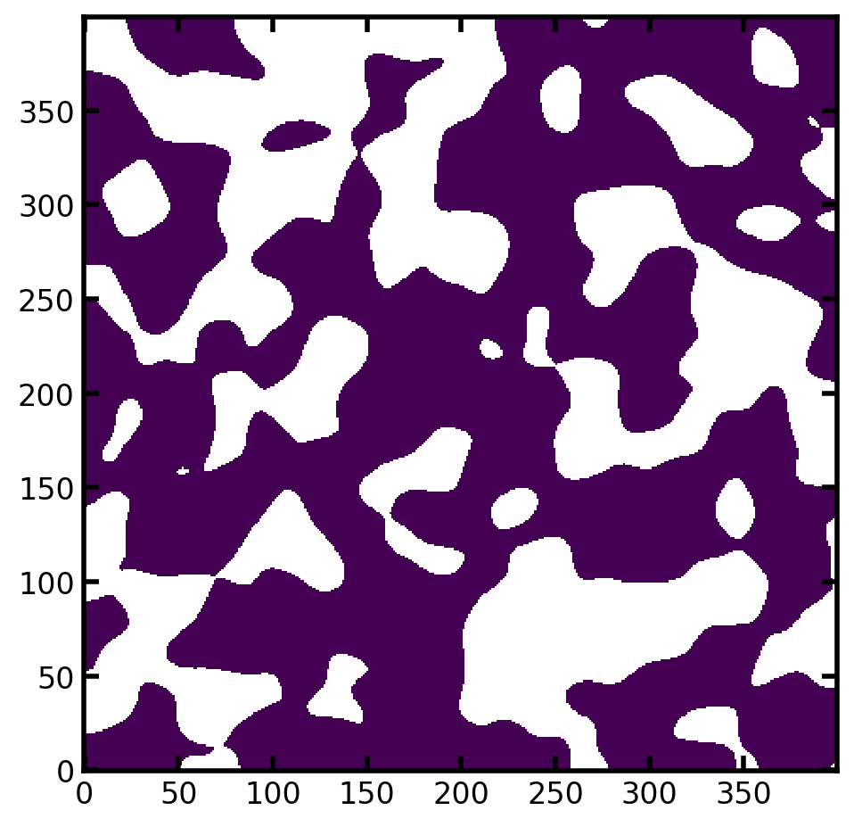
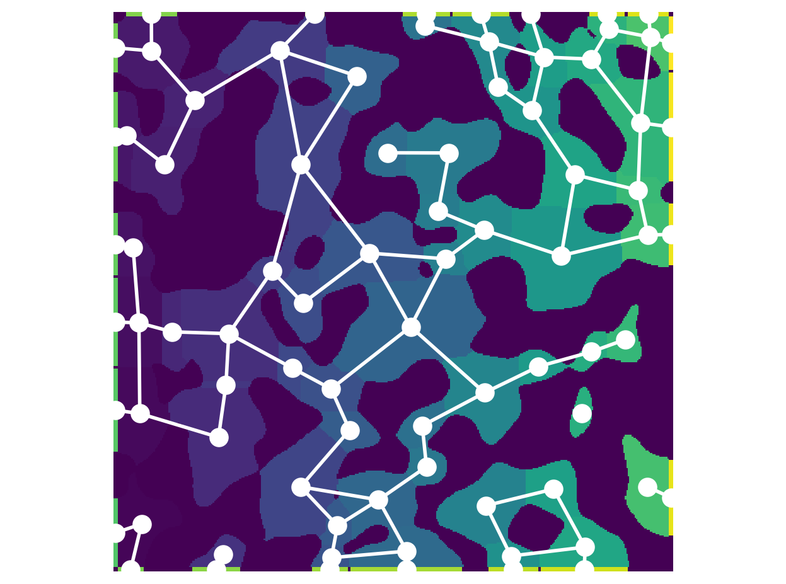
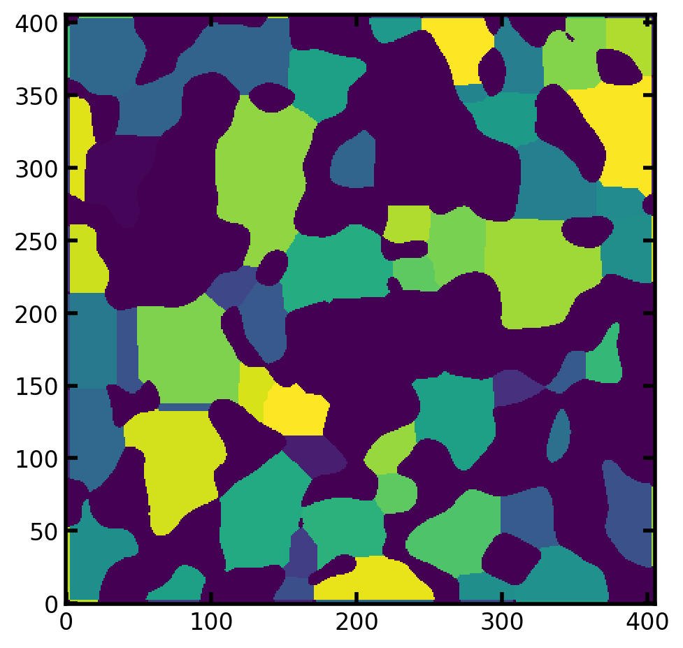

map_to_regions#
Maps pore values from a network onto the image from which it was extracted
import numpy as np
import porespy as ps
import openpnm as op
import matplotlib.pyplot as plt
ws = op.Workspace()
ws.settings['loglevel'] = 50
np.random.seed(10)
ps.visualization.set_mpl_style()
Create image and extract network#
im = ps.generators.blobs(shape=[400, 400], porosity=0.6)
ps.imshow(im);
snow_output = ps.networks.snow2(im, voxel_size=1)
pn = op.io.network_from_porespy(snow_output.network)

Plot the pore network#
fig, ax = plt.subplots()
op.visualization.plot_connections(pn, c='w', linewidth=2, ax=ax)
op.visualization.plot_coordinates(pn, c='w', s=100, ax=ax)
plt.imshow(snow_output.regions.T, origin='lower')
plt.axis('off');

Now assign some values to the network:
pn['pore.values'] = np.random.rand(pn.Np)
And now assign these values to the image regions:
reg = ps.networks.map_to_regions(regions=snow_output.regions.T, values=pn['pore.values'])
plt.imshow(reg, origin='lower');
